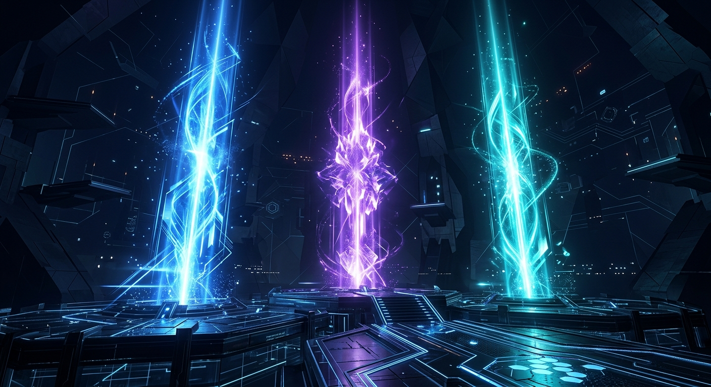

Install, Configure & Master AI-Powered Long-Term Memory
Daniel Wright • NavAIgate • dw@navaigate.dev • navaigate.dev
TODAY'S JOURNEY
01 // THE PROBLEM
02 // THE SOLUTION
Decisions & context survive every session
Offload research to NotebookLM (free tier)
One source becomes podcast, video, infographic

03 // CAPABILITIES
Decisions & rationale across sessions
Contacts, meetings, follow-ups
Record the "why" behind choices
Podcast, video, infographic from one source
40-70 sources synthesised into insights
Store and query meeting transcripts
04 // THE SKILL FILE
notebooklm login can't work in Claude Code)05 // LIVE INSTALL
NotebookLMSkill.md into Claude Code~/.notebooklm-venvnotebooklm-py[browser] via pipplaywright install chromium (headless browser for auth)~/bin/notebooklmnotebooklm --help06 // AUTHENTICATION
The built-in notebooklm login needs you to press Enter in the terminal after signing in. Claude Code's bash tool can't do interactive input, so the browser opens and closes instantly.
The skill writes a custom Python script using Playwright (installed in step 6). It opens Chromium, waits for a file-based signal instead of keyboard input, then captures your cookies.
THE FLOW
notebooklm.google.comnotebooklm auth check~/.notebooklm/browser_profile and retry07 // COMMANDS
| Task | Command |
|---|---|
| List notebooks | notebooklm list |
| Create notebook | notebooklm create "Title" |
| Add URL source | notebooklm source add "https://..." |
| Add YouTube | notebooklm source add "https://youtube.com/..." |
| Chat with notebook | notebooklm ask "question" |
| Deep research | notebooklm source add-research "query" --mode deep |
| Generate podcast | notebooklm generate audio "instructions" |
| Generate infographic | notebooklm generate infographic |
| Download | notebooklm download audio ./output.mp3 |
08 // USE CASE 1
08 // LIVE DEMO
"Create a brand new notebook based on everything
in this conversation. Add deep research on this topic.
Once done, give me 10 distilled insights with
3 core actions I need to do immediately.""NotebookLM did all the heavy lifting — deep research across dozens of sources — and Claude just made one API call to get the results. Zero extra token cost."
09 // USE CASE 2
One source → unlimited outputs, all free
| Type | Output | Time |
|---|---|---|
| Podcast | .mp3 | 10-20 min |
| Video | .mp4 | 15-45 min |
| Slide deck | .pptx | 5-10 min |
| Infographic | .png | 2-5 min |
| Report | .md | 2-5 min |
| Quiz | .html | 5-15 min |
| Mind map | .json | Instant |
09 // LIVE DEMO
"Create an infographic in NotebookLM using
premium colours and fonts, based on our conversation.
Download it for me.""Everything NotebookLM generates is free. Podcasts, videos, infographics — you're not burning Claude tokens for any of it."
10 // USE CASE 3
Persistent memory that grows with every session
10 // WRAPUP SKILL
/wrapup • "wrap up" • "save this session" • "end of session"
/wrapup11 // POWER MOVE
Add this to your Claude project instructions:
"Whenever answering questions about strategy,
always consult the AI Brain notebook
in NotebookLM first."Instant semantic search of your entire history
Every session adds more context — zero token cost to query
12 // CO-WORK
NotebookLMSkill-Cowork.mdCo-work is sandboxed — can't read local files. Claude Code bakes auth cookies directly into the skill file.
Stripped to only essential cookies: ~1,400 tokens (vs ~3,100).
RECAP
Deeper research, better decisions, less token spend
Free generation of podcasts, videos, infographics
AI Brain grows over time, semantic retrieval
"Your NotebookLM Brain is a semantic search engine over your entire Claude history — and it costs nothing to query."
NotebookLM Skill file • WrapUp Skill file • Presenter guide
Video: "Claude Code + NotebookLM = Infinite Memory" — Jack Roberts